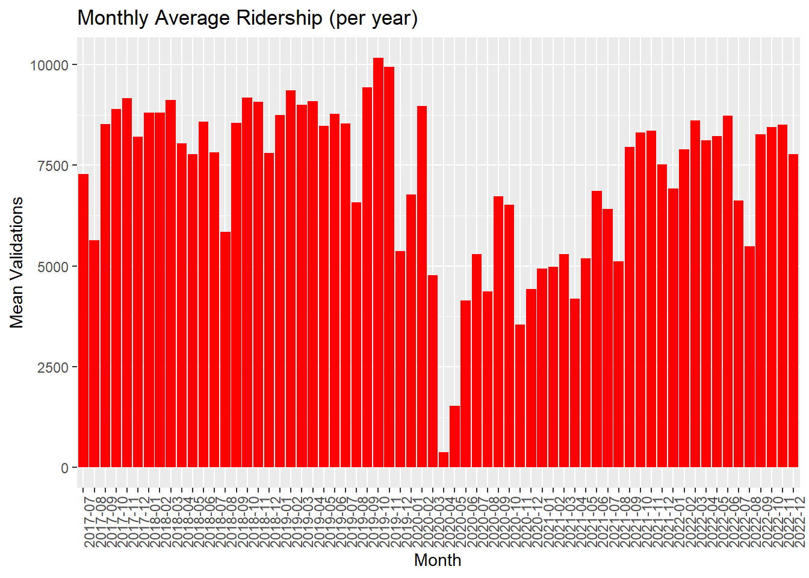
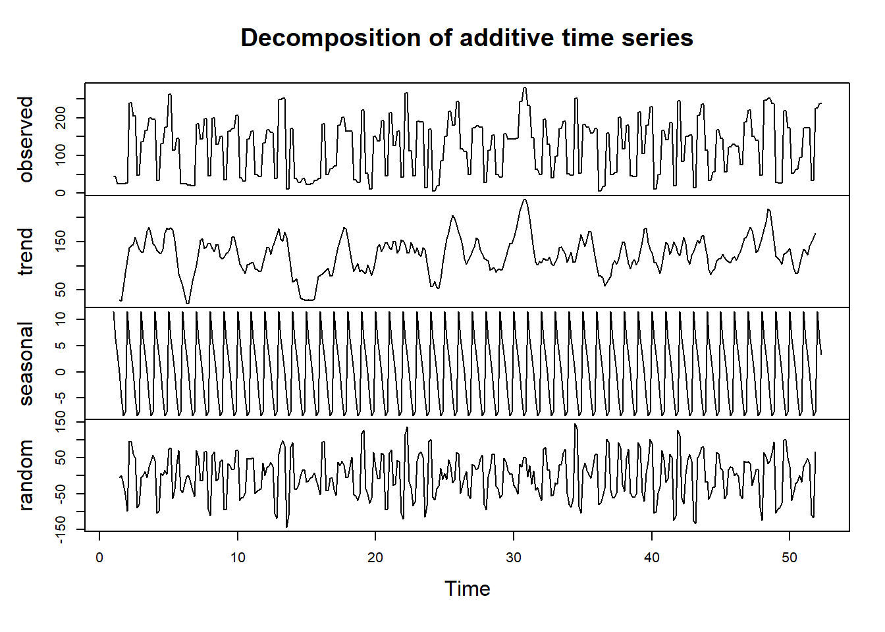
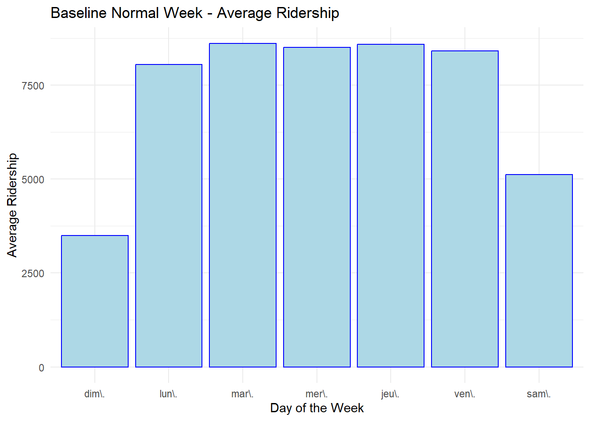
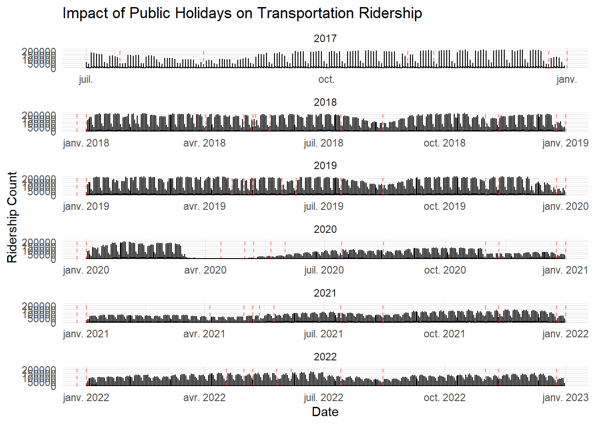
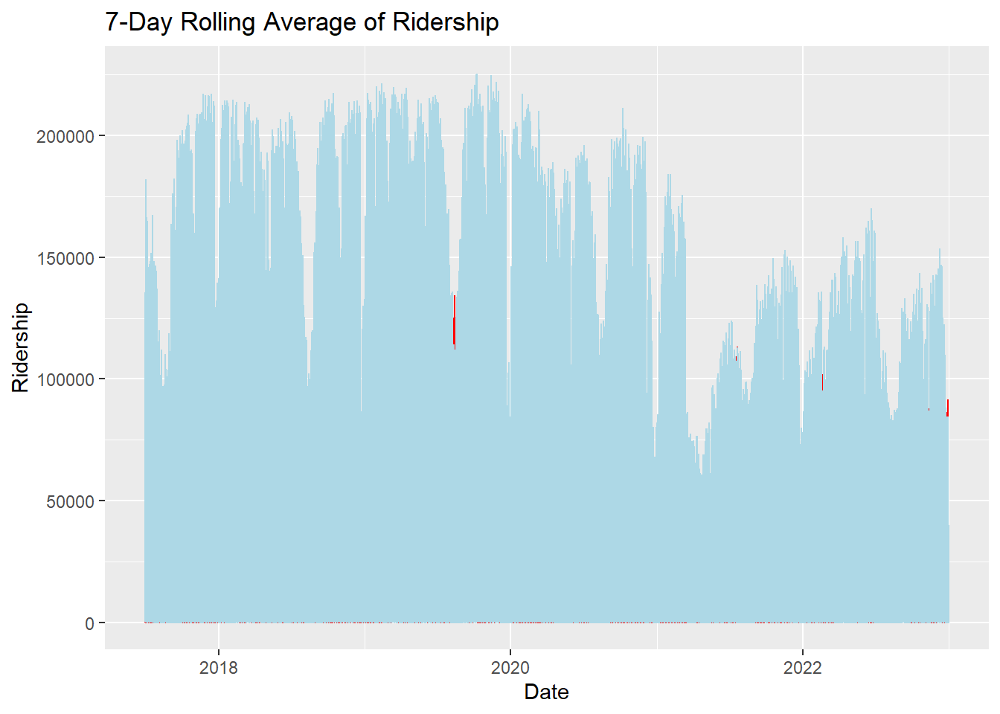
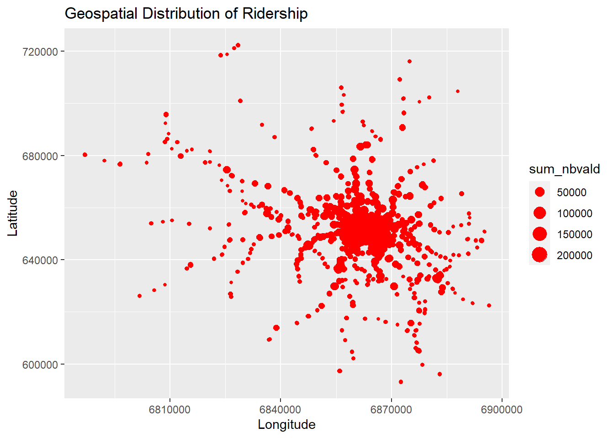

Analyzing and Visualizing Ridership Patterns in Île-de-France Rail Network
GROUP : Melek Boussif - Sana Bouhaouala - Ghailene Boughzala
Class : M2 SIA
Introduction
In the hustle and bustle of daily life, our journeys through Île-de-France become the canvas upon which diverse stories of connection and discovery unfold. More than mere transit points, the train stations in this region serve as gateways to experiences, from the familiar commute to work and the excitement of school days to the joy of exploring new destinations for leisure.
Every day, Île-de-France’s train stations host a symphony of journeys. The early morning rush witnesses commuters navigating their way to work, students eagerly embarking on their educational quests, and families setting out for weekend adventures. The efficiency of the train network is paramount in ensuring that these journeys are seamless, reliable, and accessible to all. However, the rhythm of people traveling through Île-de-France’s railway stations is dynamic, dancing with the seasons and reflecting societal patterns.
This project, spanning the years 2017 to 2022, is a deep dive into the intricate dance of ridership patterns across different periods. By dissecting the data, our aim is to shed light on how the community’s travel landscape evolves during holidays, school breaks, and other distinctive times. Going beyond mere statistics, our goal is to provide decision-makers with insights that capture the nuanced shifts in ridership, facilitating informed decision-making. Through the lens of data, we aspire to unveil the unique stories woven into each commuter’s journey and contribute to the ongoing evolution of transportation services in this vibrant region.
Loading the libraries
library(dplyr)
Warning: le package 'dplyr' a été compilé avec la version R 4.2.3
Attachement du package : 'dplyr'
Les objets suivants sont masqués depuis 'package:stats':
filter, lag
Les objets suivants sont masqués depuis 'package:base':
intersect, setdiff, setequal, union
library(ggplot2)
Warning: le package 'ggplot2' a été compilé avec la version R 4.2.2
library(lubridate)
Attachement du package : 'lubridate'
Les objets suivants sont masqués depuis 'package:base':
date, intersect, setdiff, union
library(strucchange)
Warning: le package 'strucchange' a été compilé avec la version R 4.2.3
Le chargement a nécessité le package : zoo
Warning: le package 'zoo' a été compilé avec la version R 4.2.2
Attachement du package : 'zoo'
Les objets suivants sont masqués depuis 'package:base':
as.Date, as.Date.numeric
Le chargement a nécessité le package : sandwich
Warning: le package 'sandwich' a été compilé avec la version R 4.2.3
library(zoo)library(sf)
Warning: le package 'sf' a été compilé avec la version R 4.2.3
Linking to GEOS 3.9.3, GDAL 3.5.2, PROJ 8.2.1; sf_use_s2() is TRUE
library(spdep)
Warning: le package 'spdep' a été compilé avec la version R 4.2.3
Le chargement a nécessité le package : spData
Warning: le package 'spData' a été compilé avec la version R 4.2.3
To access larger datasets in this package, install the spDataLarge
package with: `install.packages('spDataLarge',
repos='https://nowosad.github.io/drat/', type='source')`
1. Data Collection and Cleaning
1.1. Merging “Historique des données de validation sur le réseau ferré”
We noticed that the “Historique des données de validation sur le réseau ferré” is divided into multiple files. In order to conduct a relevant analysis, we need to merge those files to create one single file.
Cleaning the data is crucial as it ensures accuracy, reliability, and meaningful insights by addressing missing values, handling outliers, and rectifying inconsistencies, laying the foundation for robust analyses and reliable decision-making. In order to do the right cleaning, we visualized the unique values of each column. This helped us detect the nan values, the fact that all of the columns are typed as characters and even the presence of “?” values in some columns.
Warning: There was 1 warning in `mutate()`.
ℹ In argument: `CODE_STIF_ARRET = .Primitive("as.integer")(CODE_STIF_ARRET)`.
Caused by warning:
! NAs introduits lors de la conversion automatique
Warning: There was 1 warning in `mutate()`.
ℹ In argument: `CODE_STIF_RES = .Primitive("as.integer")(CODE_STIF_RES)`.
Caused by warning:
! NAs introduits lors de la conversion automatique
[1] JOUR CODE_STIF_TRNS CODE_STIF_RES CODE_STIF_ARRET
[5] LIBELLE_ARRET ID_REFA_LDA CATEGORIE_TITRE NB_VALD
<0 lignes> (ou 'row.names' de longueur nulle)
Comment : Handling duplicated values is important for maintaining data accuracy and preventing the distortion of statistical analyses and modeling outcomes, ensuring the reliability of insights derived from the dataset. In our case, we don’t have any duplicated rows. Thus, we don’t have any special treatment to do regarding the duplicated rows.
f. Handling missing values
# Number of missing values per columnna_counts =colSums(is.na(historique))print(na_counts)
# Percentage of missing values in the whole dataframetotal_cells =prod(dim(historique))missing_cells =sum(is.na(historique))missing_percentage = missing_cells / total_cells *100print(paste("Overall percentage of missing values in the dataframe:", missing_percentage, "%"))
[1] "Overall percentage of missing values in the dataframe: 1.52895770679188 %"
Comment : Handling missing values is crucial because they can introduce bias, compromise data integrity, and lead to inaccurate results, affecting the reliability and interpretability of analyses and models. To achieve that, we first visualized the number of missing values within each column. Then we calculated the percentage of missing values in the whole dataframe. Since the missing values only represent 1.5% (which is not a significant percentage) of the whole data, we decided to delete them.
historique =na.omit(historique)
g. Handling outliers
# Number of outliers per columnoutlier_info =data.frame(Column =character(), Total_Outliers =numeric(), stringsAsFactors =FALSE)for (column innames(historique)) {if (is.numeric(historique[[column]])) { iqr <-IQR(historique[[column]], na.rm =TRUE) upper_bound <-quantile(historique[[column]], 0.75, na.rm =TRUE) +1.5* iqr lower_bound <-quantile(historique[[column]], 0.25, na.rm =TRUE) -1.5* iqr outliers <- historique[[column]] > upper_bound | historique[[column]] < lower_bound total_outliers <-sum(outliers) outlier_info <-rbind(outlier_info, data.frame(Column = column, Total_Outliers = total_outliers)) }}# Total number of outliers across all columnstotal_outliers_all_columns <-sum(outlier_info$Total_Outliers)cat("Total number of outliers in the entire dataset:", total_outliers_all_columns, "\n")
Total number of outliers in the entire dataset: 1753399
outliers_percentage = total_outliers_all_columns / total_cells *100print(paste("Overall percentage of outliers in the whole dataframe:", outliers_percentage, "%"))
[1] "Overall percentage of outliers in the whole dataframe: 2.03528159287213 %"
Comment : Handling outliers is essential to ensure the robustness and accuracy of statistical analyses and machine learning models, preventing skewed results and maintaining the integrity of data-driven insights. In this analysis, we first visualized the number of outliers within each column. Then we calculated the percentage of outliers in the whole dataframe. The outliers only represent 2% (which is not a significant percentage) of the whole data. However, we cannot consider them as outliers because :
The “ID_REFA_LDA” represents ID. Having an outlier in that column doesn’t mean anything
The “CODE_STIF_ARRET” column cannot present outliers either
The “NB_VALD” is the number of validations. Thus, depending on the day and the period, the number of validations may be more or less than usual. This information is relevant for our analysis
This leaves us with this final “historique” dataframe :
summary(historique)
JOUR CODE_STIF_TRNS CODE_STIF_RES CODE_STIF_ARRET
Length:9466926 Min. :100.0 Min. :110.0 Min. : 1.0
Class :character 1st Qu.:100.0 1st Qu.:110.0 1st Qu.: 235.0
Mode :character Median :800.0 Median :801.0 Median : 483.0
Mean :483.9 Mean :500.3 Mean : 991.5
3rd Qu.:800.0 3rd Qu.:805.0 3rd Qu.: 722.0
Max. :810.0 Max. :854.0 Max. :483901.0
LIBELLE_ARRET ID_REFA_LDA CATEGORIE_TITRE NB_VALD
Length:9466926 Min. : 0 Length:9466926 Min. : 5.0
Class :character 1st Qu.: 66803 Class :character 1st Qu.: 19.0
Mode :character Median : 71166 Mode :character Median : 138.0
Mean : 86760 Mean : 831.4
3rd Qu.: 71870 3rd Qu.: 536.0
Max. :483315 Max. :129080.0
1.4. Merging the “historique” dataframe with the “zone d’arrets” dataframe
# Total percentage of the missing valuestotal_cells =prod(dim(merged_df))missing_cells =sum(is.na(merged_df))missing_percentage = missing_cells / total_cells *100print(paste("Overall percentage of missing values in the merged dataframe:", missing_percentage, "%"))
[1] "Overall percentage of missing values in the merged dataframe: 0.0421752498837412 %"
Comment : Just like the other “historique” dataframe, we first visualized the number of missing values within each column and the percentage of missing values in the whole dataframe. The missing values only represent 0.04% (which is really not a significant percentage) of the whole data. Thus, we decided to delete them.
merged_df =na.omit(merged_df)
c. Dividing the JOUR column into month and day of week
Comment : Dividing a date variable will help us conduct different relevant analysis, depending on the months, the day of weeks and the years.
2. Exploratory Data Analysis (EDA)
Conducting Exploratory Data Analysis (EDA) is essential because it helps uncover patterns, relationships, and key insights within a dataset, providing a foundational understanding of the data’s characteristics, facilitating informed decision-making, and guiding subsequent modeling or analytical approaches.
2.1. Exploring overall trends
Exploring overall trends is crucial as it provides a comprehensive understanding of the dataset’s patterns, enabling the identification of significant temporal variations and facilitating informed decision-making in data-driven analyses.
a. Plotting ridership trends (month - year)
ggplot(merged_df, aes(x = Month_Year, y = sum_nbvald)) +geom_bar(stat ="summary", fun ="mean", fill ="red") +labs(title ="Monthly Average Ridership (per year)", x ="Month", y ="Mean Validations") +theme(axis.text.x =element_text(angle =90, hjust =1))

Comment : A significant drop (nb_vald near 0) is observed around the beginning of 2020, specifically March 2020, when there was a lockdown against COVID-19. Also, due to covid 19 we can see that there are 2 months where there is a big decrease in the validation
On Saturadys and Sundays people prefer to stay home after a week of work
Ridership on Mondays and Fridays isslightly less that during the middle of the week. This is probably due to the fact that most of the people who work take that day to work from home
The ridership peak is on Tuesday and Thursday. Whereas, Saturday and Sunday, especially Sunday are significantly lower compared to other days. This is due to the fact that people take time to rest during the weekends.
Comment : A decrease is observed around August, a period when many French people go on summer vacation. We can also observe that October and November are the months with the highest ridership (slightly above average).
# A tibble: 5 × 2
LIBELLE_ARRET total_validations
<chr> <dbl>
1 LA DEFENSE-GRANDE ARCHE 1639252368
2 MONTPARNASSE 987728360
3 GARE DE LYON 973832272
4 SAINT-LAZARE 884860192
5 GARE DU NORD 747922074
`summarise()` has grouped output by 'day_of_week'. You can override using the
`.groups` argument.
print(top_3_arrets_per_day)
# A tibble: 21 × 3
# Groups: day_of_week [7]
day_of_week LIBELLE_ARRET total_validations
<ord> <chr> <dbl>
1 "dim\\." MONTPARNASSE 85530912
2 "dim\\." GARE DE LYON 84887257
3 "dim\\." LA DEFENSE-GRANDE ARCHE 78098456
4 "lun\\." LA DEFENSE-GRANDE ARCHE 276679152
5 "lun\\." MONTPARNASSE 161745888
6 "lun\\." GARE DE LYON 161001883
7 "mar\\." LA DEFENSE-GRANDE ARCHE 295309224
8 "mar\\." MONTPARNASSE 164618680
9 "mar\\." GARE DE LYON 164271009
10 "mer\\." LA DEFENSE-GRANDE ARCHE 288885696
# ℹ 11 more rows
Comment : On weekdays, La Défense is always in the first position. Whereas, on Sundays, Gare de Lyon overtakes La Défense, but the top 3 remains the same.
`summarise()` has grouped output by 'month'. You can override using the
`.groups` argument.
print(top_3_arrets_per_month)
# A tibble: 36 × 3
# Groups: month [12]
month LIBELLE_ARRET total_validations
<fct> <chr> <dbl>
1 January LA DEFENSE-GRANDE ARCHE 143857144
2 January GARE DE LYON 82023214
3 January MONTPARNASSE 76573200
4 February LA DEFENSE-GRANDE ARCHE 140816424
5 February MONTPARNASSE 85837368
6 February GARE DE LYON 82332656
7 March LA DEFENSE-GRANDE ARCHE 138847504
8 March GARE DE LYON 83870773
9 March MONTPARNASSE 82747552
10 April LA DEFENSE-GRANDE ARCHE 112752040
# ℹ 26 more rows
Comment :
From January to August, the top 3 most frequented stops are : La Défense - Gare de Lyon - Montparnasse
From August to December, the top 3 most frequented stops are : La Défense - Saint Lazare - Gare de Lyon
2.3 Exploring overall seasonality
Exploring overall seasonality is vital as it reveals recurring patterns and temporal fluctuations within the data, helping to identify seasonal trends and providing valuable insights for strategic planning and decision-making in various domains.
a. Creating a subset of the data
subset_data = merged_df$sum_nbvald[1:(6*60)]
Comment : Since the data has a huge number of rows, we decided to visualize the seasonality on the first semester of the year. We noticed that each day has two rows in our data, that’s why we multiplied the number of months (5) by the number of days (2 * 30 = 60)
b. Visualizing the weekly seasonality of the time serie for a 5 month period
decomposition =decompose(ts(subset_data, frequency =7))plot(decomposition)

Comment : We used 7 as a frequency to indicate that it is a weekly visualization (Since we have one row per day in our data). The recurring patterns in the seasonal component indicate that the data is subject to seasonal fluctuations. Transportation ridership exhibits a clear seasonal pattern with peaks (most likely happening during the holiday weeks). Thus, we can say that every week is not very different from the previous one. Moreover, the random fluctuations in the residual error reveal that there is some unexplained variation in the data that is not due to the trend or seasonal components. Finally, we can notice that overall, the trend is slowly increasing.
ggplot(baseline_week, aes(x = day_of_week, y = avg_ridership)) +geom_bar(stat ="identity", fill ="lightblue", color ="blue") +labs(title ="Baseline Normal Week - Average Ridership",x ="Day of the Week",y ="Average Ridership") +theme_minimal()

Comment : Plotting the baseline normal week will help us detect the differences with the special days.
Comment : Public holidays dates may affect our data. In fact, we all like to use that days to either go on vacation or do some tasks. In order to see the impact of the public holiday dates on the transportation ridership, we created a vector with all of the public holidays dates since July 2017. This vector was used to detect them within our data.
ggplot(merged_df, aes(x = JOUR, y = sum_nbvald)) +geom_line() +geom_vline(xintercept = public_holidays_dates, linetype ="dashed", color ="red", alpha =0.5) +labs(title ="Impact of Public Holidays on Transportation Ridership",x ="Date",y ="Ridership Count") +theme_minimal() +facet_wrap(~year(JOUR), scales ="free_x", ncol =1)

Comment :
As observed earlier, the year 2020 is marked by COVID-19. We can notice that ridership has decreased since 2020 (due to COVID-19 and increased work from home opportunities). Thus, the year 2020 may affect our results and might be considered as an outlier.
In general, the least busy month is August.
During almost every single public holiday day, the transportation ridership has decreased. French people might be trying to benefit from public holiday dates to either rest at home or do a trip
Comment : The New Year day is one of the most important event of the year. It is known for it is known for its parties, its celebrations and outings. In order to visualize the impact of the new year on the transportation ridership, we created a vector with all new year’s eve days. This vector was used to detect them within our data.
# Summarize the total ridership for New Year's Daynew_year_ridership = merged_df %>%filter(newyear =="newyear") %>%group_by(JOUR) %>%summarize(Total_NB_VALD =sum(sum_nbvald, na.rm =TRUE))# Calculate the average daily ridership for each yearavg_daily_ridership_per_year = merged_df %>%mutate(Year =format(JOUR, "%Y")) %>%group_by(Year) %>%summarize(Avg_Daily_NB_VALD =mean(sum_nbvald, na.rm =TRUE))# Add a Year column to the new_year_ridership for mergingnew_year_ridership$Year =format(new_year_ridership$JOUR, "%Y")# Merge the average daily ridership with the New Year's Day ridershipnew_year_ridership_with_avg =merge(new_year_ridership, avg_daily_ridership_per_year, by ="Year", all.x =TRUE)print(new_year_ridership_with_avg)
Comment : This part of the analysis emphasizes the fact that the new year has an impact on the transportation ridership. As we can see, the total number of validations increases significantly during that day. This is due to the fact that people go out on new year’s eve day to celebrate the start of the next year.
4. Statistical Methods
Conducting statistical analysis is essential as it allows for rigorous examination and interpretation of data patterns, providing quantitative insights that support informed decision-making and uncovering meaningful relationships within the dataset.
4.1. Descriptive Statistics
summary(merged_df$sum_nbvald)
Min. 1st Qu. Median Mean 3rd Qu. Max.
5 794 3581 7262 8467 225524
4.2. 7-day Rolling Average of Ridership
merged_df$RollingAvg =rollmean(merged_df$sum_nbvald, 7, fill =NA, align ="right")ggplot(merged_df, aes(x = JOUR)) +geom_line(aes(y = sum_nbvald), color ="red") +geom_line(aes(y = RollingAvg), color ="lightblue") +labs(title ="7-Day Rolling Average of Ridership", x ="Date", y ="Ridership")

Comment : The first line (red color) represents the raw daily ridership data. This line is less smooth and noisy, reflecting the day-to-day fluctuations in ridership. The second line (lightblue color) represents the 7-day rolling average of the ridership data. This line is smoother and provides a more accurate representation of the average ridership over a 7-day period.
From 2018 to 2020, we can observe a steady increase in ridership. However, the 7-day rolling average line also reveals some irregularities in ridership that are most likely due to the pandemic, lockdowns, holidays.
4.3. Geospatial Distribution of Ridership
ggplot(merged_df, aes(x = ZdAYEpsg2154 , y = ZdAXEpsg2154 , size = sum_nbvald)) +geom_point(color ="red") +labs(title ="Geospatial Distribution of Ridership", x ="Longitude", y ="Latitude")

Comment : The exploration of the geospatial distribution of ridership provides valuable insights into the spatial patterns and concentration of public transportation usage, offering a geographical perspective that can inform urban planning, resource allocation, and targeted improvements in the transportation network.
Welch Two Sample t-test
data: regular_weeks_data$sum_nbvald and holiday_weeks_data$sum_nbvald
t = 185.2, df = 137625, p-value < 2.2e-16
alternative hypothesis: true difference in means is not equal to 0
95 percent confidence interval:
3948.763 4033.237
sample estimates:
mean of x mean of y
7378.642 3387.642
Comment : Welch Two Sample t-test is a statistical test used to assess whether there is a significant difference between the means of two independent groups. The results strongly suggest that there is a significant difference in ridership (number of validations) between regular weeks and holiday weeks. The difference is substantial, with higher ridership during regular weeks compared to holiday weeks.
Comment : The Shapiro-Wilk test is a hypothesis test that is applied to a sample and whose null hypothesis is that the sample has been generated from a normal distribution. Normality means that a particular sample has been generated from a Gaussian Distribution. In our case, the p-value is < 0.05. Thus, the data is not normally distributed.
4.6. Anova test
anova_model =aov(sum_nbvald ~factor(day_of_week), data = merged_df)summary(anova_model)
Df Sum Sq Mean Sq F value Pr(>F)
factor(day_of_week) 6 1.323e+13 2.205e+12 11428 <2e-16 ***
Residuals 3607336 6.960e+14 1.930e+08
---
Signif. codes: 0 '***' 0.001 '**' 0.01 '*' 0.05 '.' 0.1 ' ' 1
anova_model =aov(sum_nbvald ~factor(Month_Year), data = merged_df)summary(anova_model)
Df Sum Sq Mean Sq F value Pr(>F)
factor(Month_Year) 65 1.362e+13 2.095e+11 1087 <2e-16 ***
Residuals 3607277 6.957e+14 1.928e+08
---
Signif. codes: 0 '***' 0.001 '**' 0.01 '*' 0.05 '.' 0.1 ' ' 1
anova_model =aov(sum_nbvald ~factor(is_public_holiday), data = merged_df)summary(anova_model)
Df Sum Sq Mean Sq F value Pr(>F)
factor(is_public_holiday) 1 1.636e+12 1.636e+12 8339 <2e-16 ***
Residuals 3607341 7.076e+14 1.962e+08
---
Signif. codes: 0 '***' 0.001 '**' 0.01 '*' 0.05 '.' 0.1 ' ' 1
Comment : ANOVA, or Analysis of Variance, is a statistical test used to compare the means and differences of multiple groups. Overall, these findings suggest that the number of validations (ridership) exhibits a high level of variability and is influenced by various factors such as the day of the week, the month, whether it is a public holiday, and even the specific year.
Conclusion
This comprehensive transportation ridership analysis project undertook an in-depth exploration of historical public transportation data within the Île-de-France region, with the primary goal of unveiling intricate patterns and trends. The initial phases involved meticulous data collection, cleaning, and the integration of diverse datasets. Addressing missing values and ensuring data consistency were pivotal in preparing the dataset for insightful analysis. During the exploratory data analysis (EDA) phase, several noteworthy trends emerged. A significant decline in ridership was observed in March 2020, correlating with the implementation of the COVID-19 lockdown measures. Delving into daily ridership patterns, we uncovered variations across different days of the week, with distinctive peaks during holiday months (especially during the new year’s eve day) and a seasonal decrease in the summer. La Défense-Grande Arche stood out as the most frequented stop, underscoring its significance in the transportation network. Furthermore, a geospatial analysis provided a visual representation of ridership distribution across various locations, offering valuable insights for urban planning. The application of statistical methods, including hypothesis testing and correlation analysis, allowed for a deeper understanding of the factors influencing ridership trends. Notably, these methods revealed significant differences in ridership between regular and holiday weeks, emphasizing the importance of external events in shaping ridership patterns. The project concluded with robust findings that hold implications for public transport planning, resource allocation, and policy adjustments.